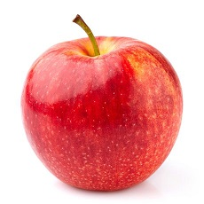

The name of our country is Bangladesh. It became independent in 1971. Dhaka is the capital of Bangladesh. It is a small country. It has a land area of 147570 square k.m. There are 14 million people in the country. Bangladesh is mainly an agricultural country. Rice,jute,sugar cane and tea are the main crops of Bangladesh. Many kinds of fruits also grow here . Jack fruit,mangoes, bananas ,pine apples,guavas and water melons are the most common fruit in Bangladesh. There are also many rivers in Bangladesh. The Padma, the Meghna,the Jamuna, the Karnaphuly are the main rivers in Bangladesh. There are many varities of fishes in these rivers. Bangladesh has many interesting places. The Sundarbans, Rangamati and Cox’s Bazar are very attractive.
Divisions of Bangladesh
frute pic


List of Bangladesh ODI cricketers
Masrafi
Tamaim
Nasir
Rubel
Mahmudullah
Musfiq
Taskin
Bangladesh is surrounded by India to the west, north and east. It borders Myanmar in the south-east. The Bay of Bengal is to the south. Bangladesh is mainly low-lying delta, but mountains separate it from Myanmar and parts of India. There is a large area of swamp forest in the south.
ami rajshai jabo
ami dhaka jabo
ami Khulna jabo
ami Tangail jabo
gram ar manus gual khub valo. tader maje bonding khub valo . abar nouka bais di a amra onek koya price paisi.agami te aro valo korbe amar gram
onek bo market ase sobai sei khane jai, school collage onek ase.akta collage ace .ami sei madrasai pora sona korisi.tader alakay bazar thakar karone selera faul hoyia gese
Tader gram a rasta valona.soru chipa dia jaite hoy amader kase valoi lage.onek din amader alakar lok sekhane bazar korte jaito.mamun bissas onek valo kaj korse